Optimization ProblemsỨng dụng đạo hàm để giải quyết một số vấn đề thực tiễn
Grade 12 · Topic: Applications of DerivativesLớp 12 · Chủ đề: Ứng dụng đạo hàm
1Lesson IntroductionGiới thiệu bài học
Learning goalsMục tiêu bài học
By the end of this lesson you can:
Sau bài học này, em có thể:
translate a real situation into a function of one variable;
chuyển một tình huống thực tế thành hàm số một biến;
use the derivative to find the largest or smallest value;
dùng đạo hàm tìm giá trị lớn nhất, giá trị nhỏ nhất;
solve optimization problems about area, volume, cost and profit;
giải bài toán tối ưu về diện tích, thể tích, chi phí, lợi nhuận;
write the answer with units and check it.
viết đáp số kèm đơn vị và kiểm tra lại.
2Mathematical VocabularyTừ vựng Toán học
optimization problem – a problem that asks for the largest or smallest value of a quantity.
bài toán tối ưu – bài toán tìm giá trị lớn nhất hoặc nhỏ nhất của một đại lượng.
objective function – the quantity we want to make largest or smallest.
hàm mục tiêu – đại lượng cần làm lớn nhất hoặc nhỏ nhất, viết thành hàm của một biến.
constraint – a condition that the variables must satisfy.
điều kiện ràng buộc – điều kiện mà các biến phải thỏa mãn.
domain – the values the variable may take in the real situation.
tập xác định (miền của biến) – các giá trị mà biến có thể nhận trong tình huống thực tế.
maximum value – the largest value of the function on its domain.
giá trị lớn nhất – giá trị lớn nhất của hàm số trên miền đang xét.
minimum value – the smallest value of the function on its domain.
giá trị nhỏ nhất – giá trị nhỏ nhất của hàm số trên miền đang xét.
critical point – a point where \(f'(x)=0\).
điểm tới hạn – điểm mà tại đó \(f'(x)=0\).
fence – a barrier around a piece of land.
hàng rào – vật chắn bao quanh một mảnh đất.
3Useful English PhrasesCụm từ tiếng Anh thường gặp
Find the largest area.
Tìm diện tích lớn nhất.
What is the smallest cost?
Chi phí nhỏ nhất là bao nhiêu?
Express \(y\) in terms of \(x\).
Biểu diễn \(y\) theo \(x\).
Find the domain of \(x\).
Tìm miền giá trị của \(x\).
At what value of \(x\) is it largest?
Với giá trị nào của \(x\) thì đại lượng đó lớn nhất?
4Prerequisite ReviewÔn tập kiến thức nền
To find the maximum or minimum of \(f\) on an interval, solve \(f'(x)=0\), then compare the values of \(f\) at the critical points and at the ends of the interval.
Để tìm giá trị lớn nhất, nhỏ nhất của \(f\) trên một khoảng, giải \(f'(x)=0\), rồi so sánh giá trị của \(f\) tại các điểm tới hạn và tại hai đầu mút của khoảng.
5TheoryLý thuyết
5.1 Steps to solve an optimization problemCác bước giải bài toán tối ưu
Four stepsBốn bước
Choose the variable \(x\) and find its domain from the problem.
Chọn biến \(x\) và tìm miền giá trị của \(x\) từ đề bài.
Write the objective function \(f(x)\) using the constraint.
Viết hàm mục tiêu \(f(x)\) bằng cách dùng điều kiện ràng buộc.
Find \(f'(x)\), solve \(f'(x)=0\) and compare values.
Tính \(f'(x)\), giải \(f'(x)=0\) rồi so sánh các giá trị.
Answer the question with units.
Trả lời đúng câu hỏi, kèm đơn vị.
5.2 Area and perimeterBài toán diện tích và chu vi
Rectangle with a fixed perimeterHình chữ nhật có chu vi cho trước
If \(x+y=p\), then \(A=xy=x(p-x)\). The derivative \(A'=p-2x\) is zero at \(x=\dfrac p2\), so the largest area is for a square.
Nếu \(x+y=p\) thì \(A=xy=x(p-x)\). Đạo hàm \(A'=p-2x\) bằng 0 tại \(x=\dfrac p2\), nên diện tích lớn nhất khi hình chữ nhật là hình vuông.
5.3 Volume of a boxBài toán thể tích hình hộp
Open boxHộp không nắp
Cut a square of side \(x\) from each corner of a square sheet of side \(a\). The volume is \(V(x)=x(a-2x)^2\) with \(0\lt x\lt\dfrac a2\). Then \(V'=(a-2x)(a-6x)\), so \(V\) is largest at \(x=\dfrac a6\) and \(V_{\max}=\dfrac{2a^3}{27}\).
Cắt bốn góc là bốn hình vuông cạnh \(x\) của tấm bìa hình vuông cạnh \(a\). Thể tích \(V(x)=x(a-2x)^2\), \(0\lt x\lt\dfrac a2\). Khi đó \(V'=(a-2x)(a-6x)\), nên \(V\) lớn nhất tại \(x=\dfrac a6\) và \(V_{\max}=\dfrac{2a^3}{27}\).
5.4 Cost and profitBài toán chi phí và lợi nhuận
Watch out!Lưu ý
Always check that the critical point lies in the domain. Real variables are often positive or whole numbers.
Luôn kiểm tra điểm tới hạn có thuộc miền giá trị của biến không. Biến thực tế thường là số dương hoặc số nguyên.
6Worked ExamplesVí dụ có lời giải
ExampleVí dụ 1BasicCơ bản – Largest area of a rectangleDiện tích lớn nhất của hình chữ nhật
A rectangle has perimeter 40 m. Find its largest area.
Một hình chữ nhật có chu vi 40 m. Tìm diện tích lớn nhất của nó.
Analysis: Let one side be \(x\), then the other side is \(20-x\).
Phân tích: Gọi một cạnh là \(x\), cạnh kia là \(20-x\).
\(A(x)=x(20-x)\), \(0\lt x\lt20\).
\(A(x)=x(20-x)\), \(0\lt x\lt20\).
\(A'=20-2x=0\Rightarrow x=10\).
\(A'=20-2x=0\Rightarrow x=10\).
\(A_{\max}=100\ \text{m}^2\) (a square of side 10 m).
\(A_{\max}=100\ \text{m}^2\) (hình vuông cạnh 10 m).
ExampleVí dụ 2BasicCơ bản – Fence along a riverHàng rào dọc bờ sông
A farmer has 60 m of fence and uses a straight river as one side. Find the largest area.
Một người có 60 m hàng rào, dùng bờ sông thẳng làm một cạnh. Tìm diện tích lớn nhất.
Analysis: Two sides of length \(x\) and one side \(60-2x\).
Phân tích: Hai cạnh dài \(x\) và một cạnh dài \(60-2x\).
\(A(x)=x(60-2x)\), \(0\lt x\lt30\).
\(A(x)=x(60-2x)\), \(0\lt x\lt30\).
\(A'=60-4x=0\Rightarrow x=15\).
\(A'=60-4x=0\Rightarrow x=15\).
\(A_{\max}=15\cdot30=450\ \text{m}^2\).
\(A_{\max}=15\cdot30=450\ \text{m}^2\).
ExampleVí dụ 3IntermediateTrung bình – Open boxHộp không nắp
From a square sheet of side 12 cm, cut four equal corner squares of side \(x\) and fold to make an open box. Find \(x\) for the largest volume and the volume.
Từ tấm bìa hình vuông cạnh 12 cm, cắt bốn góc là bốn hình vuông cạnh \(x\) rồi gấp thành hộp không nắp. Tìm \(x\) để thể tích lớn nhất và thể tích đó.
Analysis: The base has side \(12-2x\) and the height is \(x\).
Phân tích: Đáy là hình vuông cạnh \(12-2x\), chiều cao là \(x\).
\(V=x(12-2x)^2\), \(0\lt x\lt6\).
\(V=x(12-2x)^2\), \(0\lt x\lt6\).
\(V'=(12-2x)(12-6x)=0\Rightarrow x=2\) (since \(x=6\) is not in the domain).
\(V'=(12-2x)(12-6x)=0\Rightarrow x=2\) (loại \(x=6\) vì không thuộc miền giá trị).
\(x=2\ \text{cm}\), \(V_{\max}=2\cdot8^2=128\ \text{cm}^3\).
\(x=2\ \text{cm}\), \(V_{\max}=2\cdot8^2=128\ \text{cm}^3\).
ExampleVí dụ 4IntermediateTrung bình – Smallest costChi phí nhỏ nhất
The cost per item is \(C(x)=x+\dfrac{36}{x}\) (thousand VND), \(x\gt0\). Find the smallest cost.
Chi phí mỗi sản phẩm là \(C(x)=x+\dfrac{36}{x}\) (nghìn đồng), \(x\gt0\). Tìm chi phí nhỏ nhất.
Analysis: Use the derivative and a sign table on \((0;+\infty)\).
Phân tích: Dùng đạo hàm và bảng xét dấu trên \((0;+\infty)\).
\(C'=1-\dfrac{36}{x^2}=0\Rightarrow x=6\).
\(C'=1-\dfrac{36}{x^2}=0\Rightarrow x=6\).
\(C'\lt0\) on \((0;6)\), \(C'\gt0\) on \((6;+\infty)\).
\(C'\lt0\) trên \((0;6)\), \(C'\gt0\) trên \((6;+\infty)\).
\(C_{\min}=C(6)=12\) thousand VND.
\(C_{\min}=C(6)=12\) nghìn đồng.
ExampleVí dụ 5AdvancedNâng cao – ProfitLợi nhuận
A shop sells \(x\) items per day and earns profit \(P(x)=-x^2+14x-13\) (million VND), \(0\le x\le10\), \(x\) a whole number. Find the number of items for the largest profit.
Cửa hàng bán \(x\) sản phẩm mỗi ngày, lợi nhuận \(P(x)=-x^2+14x-13\) (triệu đồng), \(0\le x\le10\), \(x\) nguyên. Tìm số sản phẩm để lợi nhuận lớn nhất.
Analysis: The vertex is at \(x=7\), which is in the domain.
Phân tích: Đỉnh parabol tại \(x=7\), thuộc miền giá trị.
\(P'=-2x+14=0\Rightarrow x=7\).
\(P'=-2x+14=0\Rightarrow x=7\).
\(P(7)=-49+98-13=36\).
\(P(7)=-49+98-13=36\).
Sell 7 items; the largest profit is 36 million VND.
Bán 7 sản phẩm; lợi nhuận lớn nhất là 36 triệu đồng.
7PracticeBài tập luyện tập
A. Multiple ChoiceA. Trắc nghiệm nhiều lựa chọn
A rectangle has perimeter 24 m. Its largest area is…
Hình chữ nhật có chu vi 24 m. Diện tích lớn nhất của nó là…
Answer: b. \(x+y=12\), so \(A=x(12-x)\) is largest at \(x=6\).
Đáp án b. \(x+y=12\) nên \(A=x(12-x)\) lớn nhất tại \(x=6\).
There is 40 m of fence and a river forms one side. The largest area is…
Có 40 m hàng rào, bờ sông làm một cạnh. Diện tích lớn nhất là…
Answer: b. \(A=x(40-2x)\), maximum at \(x=10\).
Đáp án b. \(A=x(40-2x)\), lớn nhất tại \(x=10\).
A box is made from a square sheet of side 12 cm by cutting corner squares of side \(x\). The volume is largest when \(x=\)…
Làm hộp từ tấm bìa vuông cạnh 12 cm bằng cách cắt bốn góc cạnh \(x\). Thể tích lớn nhất khi \(x=\)…
Answer: b. \(V'=(12-2x)(12-6x)=0\) gives \(x=2\).
Đáp án b. \(V'=(12-2x)(12-6x)=0\) cho \(x=2\).
The figure shows the graph of \(V'(t)\), the rate of change of the volume \(V(t)\) of water in a reservoir, for \(0\le t\le 8\) (\(t\) in hours). At what time \(t\) is the volume of water largest?
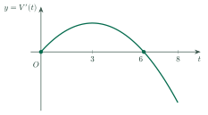
Hình bên là đồ thị của \(V'(t)\) – tốc độ thay đổi thể tích \(V(t)\) của nước trong một hồ chứa, với \(0\le t\le 8\) (\(t\) tính bằng giờ). Thể tích nước lớn nhất tại thời điểm \(t\) nào?
Answer: c. \(V'(t)\gt0\) on \((0;\,6)\) and \(V'(t)\lt0\) on \((6;\,8]\): \(V\) increases, then decreases, so it is largest at \(t=6\). (The top of the graph of \(V'\) only shows when water rises fastest.)
Đáp án c. \(V'(t)\gt0\) trên \((0;\,6)\) và \(V'(t)\lt0\) trên \((6;\,8]\): \(V\) tăng rồi giảm nên lớn nhất tại \(t=6\). (Đỉnh đồ thị \(V'\) chỉ là lúc nước dâng nhanh nhất.)
A self-driving test car moves on a straight track; its distance from the start is \(s(t)=-t^3+9t^2+3t\) (m), \(0\le t\le 5\) (s). Its largest velocity (m/s) is…
Một xe tự lái chạy thử trên đường thẳng, quãng đường đi được là \(s(t)=-t^3+9t^2+3t\) (m), \(0\le t\le 5\) (s). Vận tốc lớn nhất của xe (m/s) là…
Answer: d. \(v(t)=s'(t)=-3t^2+18t+3\), \(v'(t)=-6t+18=0\Leftrightarrow t=3\in[0;\,5]\). \(v(0)=3\), \(v(3)=30\), \(v(5)=18\), so \(v_{\max}=30\).
Đáp án d. \(v(t)=s'(t)=-3t^2+18t+3\), \(v'(t)=-6t+18=0\Leftrightarrow t=3\in[0;\,5]\). \(v(0)=3\), \(v(3)=30\), \(v(5)=18\), nên \(v_{\max}=30\).
A garden is a right triangle \(ABC\) with \(AB=24\) m, \(AC=10\) m (right angle at \(A\)). A rectangular vegetable bed has one corner at \(A\), two sides along \(AB\), \(AC\) and the opposite corner \(M\) on \(BC\) (see the figure). The largest area of the bed (m²) is…
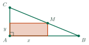
Một mảnh vườn hình tam giác \(ABC\) vuông tại \(A\), \(AB=24\) m, \(AC=10\) m. Người ta làm một luống rau hình chữ nhật có một đỉnh tại \(A\), hai cạnh nằm trên \(AB\), \(AC\) và đỉnh đối diện \(M\) nằm trên \(BC\) (xem hình). Diện tích lớn nhất của luống rau (m²) là…
Answer: a. With sides \(x\) on \(AB\) and \(y\) on \(AC\): \(\dfrac{x}{24}+\dfrac{y}{10}=1\), so \(S=xy=\dfrac{10}{24}x(24-x)\), \(S'=0\Leftrightarrow x=12\), \(y=5\), \(S_{\max}=60\).
Đáp án a. Gọi các cạnh là \(x\) (trên \(AB\)) và \(y\) (trên \(AC\)): \(\dfrac{x}{24}+\dfrac{y}{10}=1\), nên \(S=xy=\dfrac{10}{24}x(24-x)\), \(S'=0\Leftrightarrow x=12\), \(y=5\), \(S_{\max}=60\).
B. True or FalseB. Đúng hoặc sai
Among rectangles of perimeter 32 m, the square has the largest area.
Trong các hình chữ nhật có chu vi 32 m, hình vuông có diện tích lớn nhất.
The largest area occurs when the two sides are equal.
Diện tích lớn nhất khi hai cạnh bằng nhau.
For \(C(x)=x+\dfrac{9}{x}\) with \(x\gt0\), the smallest value is 6.
Với \(C(x)=x+\dfrac{9}{x}\), \(x\gt0\), giá trị nhỏ nhất là 6.
\(C'=0\) at \(x=3\) and \(C(3)=6\).
\(C'=0\) tại \(x=3\) và \(C(3)=6\).
In a culture, the number of bacteria (thousands) after \(t\) hours is \(N(t)=t^3-15t^2+63t+20\). During \(0\le t\le 8\), the number of bacteria is largest at \(t=3\).
Trong một môi trường nuôi cấy, số vi khuẩn (nghìn con) sau \(t\) giờ là \(N(t)=t^3-15t^2+63t+20\). Trong khoảng \(0\le t\le 8\), số vi khuẩn lớn nhất tại thời điểm \(t=3\).
\(N'(t)=3t^2-30t+63=3(t-3)(t-7)\). Compare the critical points with the ends: \(N(0)=20\), \(N(3)=101\), \(N(7)=69\), \(N(8)=76\). The largest value is at \(t=3\), so the statement is true.
\(N'(t)=3t^2-30t+63=3(t-3)(t-7)\). So sánh giá trị tại các điểm tới hạn và hai đầu mút: \(N(0)=20\), \(N(3)=101\), \(N(7)=69\), \(N(8)=76\). Giá trị lớn nhất đạt tại \(t=3\), nên mệnh đề đúng.
C. Short AnswerC. Trả lời ngắn
Two numbers have sum 10. Find the smallest value of the sum of their squares.
Hai số có tổng bằng 10. Tìm giá trị nhỏ nhất của tổng bình phương hai số đó.
Enter a number.
Nhập một số.
The minimum is at \(x=5\): \(2\cdot5^2=50\).
Nhỏ nhất khi hai số bằng nhau (\(5\)): \(2\cdot5^2=50\).
The profit is \(P(x)=-x^2+6x-5\) (million VND). Find the largest profit.
Lợi nhuận là \(P(x)=-x^2+6x-5\) (triệu đồng). Tìm lợi nhuận lớn nhất.
Enter a number.
Nhập một số.
The vertex is at \(x=3\): \(P=4\).
Đỉnh tại \(x=3\): \(P=4\).
A rectangular yard of area \(200\ \text{m}^2\) is built beside a road. The side along the road (thick in the figure) is a wall costing \(300\,000\) VND per meter; the other three sides are a fence costing \(100\,000\) VND per meter. Find the smallest total cost (million VND).
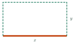
Một khu đất hình chữ nhật rộng \(200\ \text{m}^2\) nằm cạnh đường. Cạnh giáp đường (nét đậm trên hình) xây tường giá \(300\,000\) đồng/m, ba cạnh còn lại rào lưới giá \(100\,000\) đồng/m. Tìm tổng chi phí nhỏ nhất (triệu đồng).
Enter a number; use a decimal point if needed.
Nhập một số; dùng dấu phẩy thập phân nếu cần.
With \(y=\dfrac{200}{x}\): \(C(x)=0.4\left(x+\dfrac{100}{x}\right)\) (million VND), \(C'(x)=0\Leftrightarrow x^2=100\Leftrightarrow x=10\); \(C(10)=8\).
Với \(y=\dfrac{200}{x}\): \(C(x)=0{,}4\left(x+\dfrac{100}{x}\right)\) (triệu đồng), \(C'(x)=0\Leftrightarrow x^2=100\Leftrightarrow x=10\); \(C(10)=8\).
D. Self-practice: Multiple ChoiceD. Tự luyện: trắc nghiệm
A window has the shape of a rectangle \(ABCD\) inscribed in a semicircle of radius \(R=12\) dm (see the figure; \(A\), \(B\) lie on the diameter). What is the largest possible area of the rectangle (dm²)?
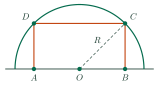
Một ô cửa có dạng hình chữ nhật \(ABCD\) nội tiếp nửa hình tròn bán kính \(R=12\) dm (xem hình; \(A\), \(B\) nằm trên đường kính). Diện tích lớn nhất của hình chữ nhật là bao nhiêu (dm²)?
Answer: a. Let \(OB=x\); then \(BC=\sqrt{144-x^2}\) and \(S=2x\sqrt{144-x^2}\). \(S^2=4x^2(144-x^2)\) is largest when \(x^2=72\), so \(S_{\max}=R^2=144\).
Đáp án a. Đặt \(OB=x\); khi đó \(BC=\sqrt{144-x^2}\) và \(S=2x\sqrt{144-x^2}\). \(S^2=4x^2(144-x^2)\) lớn nhất khi \(x^2=72\), nên \(S_{\max}=R^2=144\).
A closed cylindrical can must hold \(16\pi\ \text{cm}^3\). Which base radius (cm) uses the least metal (smallest total surface area)?
Một lon hình trụ có nắp cần chứa \(16\pi\ \text{cm}^3\). Bán kính đáy bằng bao nhiêu (cm) thì tốn ít vật liệu nhất (diện tích toàn phần nhỏ nhất)?
Answer: c. \(h=\dfrac{16}{r^2}\), \(S=2\pi r^2+\dfrac{32\pi}{r}\), \(S'=4\pi r-\dfrac{32\pi}{r^2}=0\Leftrightarrow r^3=8\Leftrightarrow r=2\).
Đáp án c. \(h=\dfrac{16}{r^2}\), \(S=2\pi r^2+\dfrac{32\pi}{r}\), \(S'=4\pi r-\dfrac{32\pi}{r^2}=0\Leftrightarrow r^3=8\Leftrightarrow r=2\).
A power station \(A\) is on one bank of a straight river \(5\) km wide; a factory \(B\) is on the other bank, \(16\) km from the point \(H\) opposite \(A\) (see the figure). A cable goes underwater from \(A\) to \(M\) on the other bank, then along the bank to \(B\). It costs \(130\) million VND per km underwater and \(120\) million VND per km on land. How far from \(H\) should \(M\) be (km) to make the cost smallest?
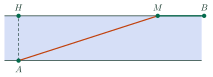
Nhà máy điện \(A\) ở một bờ sông thẳng rộng \(5\) km; xưởng \(B\) ở bờ bên kia, cách điểm \(H\) đối diện \(A\) là \(16\) km (xem hình). Dây điện đi dưới nước từ \(A\) tới \(M\) ở bờ bên kia rồi đi dọc bờ tới \(B\). Chi phí là \(130\) triệu đồng/km dưới nước và \(120\) triệu đồng/km trên bờ. Điểm \(M\) cách \(H\) bao nhiêu km thì chi phí nhỏ nhất?
Answer: a. \(C(x)=130\sqrt{25+x^2}+120(16-x)\); \(C'(x)=0\Leftrightarrow 13 x=12\sqrt{25+x^2}\Leftrightarrow x=12\).
Đáp án a. \(C(x)=130\sqrt{25+x^2}+120(16-x)\); \(C'(x)=0\Leftrightarrow 13 x=12\sqrt{25+x^2}\Leftrightarrow x=12\).
A cinema sells \(320\) tickets a day at \(60\) thousand VND each. Each time the price rises by \(5\) thousand VND, it sells \(20\) fewer tickets. Which price (thousand VND) gives the largest revenue?
Một rạp chiếu phim bán được \(320\) vé mỗi ngày với giá \(60\) nghìn đồng/vé. Cứ tăng giá thêm \(5\) nghìn đồng thì bán ít đi \(20\) vé. Giá vé bao nhiêu (nghìn đồng) thì doanh thu lớn nhất?
Answer: b. After \(x\) rises: \(R(x)=(60+5x)(320-20x)\), \(R'(x)=0\Leftrightarrow x=2\), price \(60+5\cdot2=70\).
Đáp án b. Sau \(x\) lần tăng: \(R(x)=(60+5x)(320-20x)\), \(R'(x)=0\Leftrightarrow x=2\), giá vé \(60+5\cdot2=70\).
After an injection, the concentration of a drug in the blood is \(C(t)=\dfrac{4t}{t^2+16}\) (mg/l), \(t\) in hours. After how many hours is the concentration highest?
Sau khi tiêm, nồng độ thuốc trong máu là \(C(t)=\dfrac{4t}{t^2+16}\) (mg/l), \(t\) tính bằng giờ. Sau bao nhiêu giờ thì nồng độ cao nhất?
Answer: b. \(C'(t)=\dfrac{4(16-t^2)}{(t^2+16)^2}=0\Leftrightarrow t=4\); \(C'\) changes from \(+\) to \(-\).
Đáp án b. \(C'(t)=\dfrac{4(16-t^2)}{(t^2+16)^2}=0\Leftrightarrow t=4\); \(C'\) đổi dấu từ \(+\) sang \(-\).
At noon ship \(A\) is \(25\) km east of port \(O\) and sails west towards \(O\) at \(4\) km/h; at the same time ship \(B\) leaves \(O\) sailing north at \(3\) km/h. After how many hours are the ships closest?
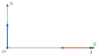
Lúc 12 giờ, tàu \(A\) cách cảng \(O\) \(25\) km về phía đông và đi về phía tây (về \(O\)) với vận tốc \(4\) km/h; cùng lúc tàu \(B\) rời \(O\) đi về phía bắc với vận tốc \(3\) km/h. Sau bao nhiêu giờ hai tàu gần nhau nhất?
Answer: d. \(AB^2=(25-4t)^2+(3t)^2\); its derivative \(2(25)t-2\cdot25\cdot4=0\Leftrightarrow t=4\).
Đáp án d. \(AB^2=(25-4t)^2+(3t)^2\); đạo hàm \(2(25)t-2\cdot25\cdot4=0\Leftrightarrow t=4\).
A farmer uses \(120\) m of fence to build a rectangular pen divided into \(2\) equal parts by fences parallel to one side (see the figure). What is the largest total area (m²)?
Một bác nông dân dùng \(120\) m lưới rào thành một khu hình chữ nhật, chia thành \(2\) ô bằng nhau bởi các hàng rào song song với một cạnh (xem hình). Tổng diện tích lớn nhất là bao nhiêu (m²)?
Answer: d. \(2x+3y=120\), \(S=xy=\dfrac{x(120-2x)}{3}\), \(S'=0\Leftrightarrow x=30\), \(y=20\), \(S=600\).
Đáp án d. \(2x+3y=120\), \(S=xy=\dfrac{x(120-2x)}{3}\), \(S'=0\Leftrightarrow x=30\), \(y=20\), \(S=600\).
The printed part of a poster has area \(96\ \text{dm}^2\). The margins are \(3\) dm at the top and bottom and \(2\) dm at each side (see the figure). What is the smallest possible area of the poster (dm²)?
Phần in chữ của một tấm áp phích có diện tích \(96\ \text{dm}^2\). Lề trên và lề dưới đều rộng \(3\) dm, lề hai bên đều rộng \(2\) dm (xem hình). Diện tích nhỏ nhất của tấm áp phích là bao nhiêu (dm²)?
Answer: c. Printed part \(x\times y\), \(xy=96\): \(S=(x+4)(y+6)=120+6x+\dfrac{384}{x}\), smallest at \(x=8\), \(y=12\): \(S=12\cdot18=216\).
Đáp án c. Phần chữ \(x\times y\), \(xy=96\): \(S=(x+4)(y+6)=120+6x+\dfrac{384}{x}\), nhỏ nhất khi \(x=8\), \(y=12\): \(S=12\cdot18=216\).
A. Multiple ChoiceA. Trắc nghiệm nhiều lựa chọn
A rectangle has perimeter 36 m. Its largest area is…
Hình chữ nhật có chu vi 36 m. Diện tích lớn nhất của nó là…
Answer: b. \(x+y=18\), so \(A=x(18-x)\) is largest at \(x=9\).
Đáp án b. \(x+y=18\) nên \(A=x(18-x)\) lớn nhất tại \(x=9\).
There is 80 m of fence and a river forms one side. The largest area is…
Có 80 m hàng rào, bờ sông làm một cạnh. Diện tích lớn nhất là…
Answer: b. \(A=x(80-2x)\), maximum at \(x=20\).
Đáp án b. \(A=x(80-2x)\), lớn nhất tại \(x=20\).
A box is made from a square sheet of side 18 cm by cutting corner squares of side \(x\). The volume is largest when \(x=\)…
Làm hộp từ tấm bìa vuông cạnh 18 cm bằng cách cắt bốn góc cạnh \(x\). Thể tích lớn nhất khi \(x=\)…
Answer: b. \(V'=(18-2x)(18-6x)=0\) gives \(x=3\).
Đáp án b. \(V'=(18-2x)(18-6x)=0\) cho \(x=3\).
Water flows into and out of a tank. The graph of \(V'(t)\) on \([0;\,11]\) is shown (\(t\) in hours). The amount of water in the tank is greatest at \(t=\)…
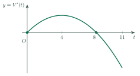
Nước vừa chảy vào vừa chảy ra khỏi một bể. Đồ thị của \(V'(t)\) trên \([0;\,11]\) cho như hình (\(t\) tính bằng giờ). Lượng nước trong bể nhiều nhất khi \(t=\)…
Answer: d. \(V'(t)\gt0\) on \((0;\,8)\) and \(V'(t)\lt0\) on \((8;\,11]\): \(V\) increases, then decreases, so it is largest at \(t=8\). (The top of the graph of \(V'\) only shows when water rises fastest.)
Đáp án d. \(V'(t)\gt0\) trên \((0;\,8)\) và \(V'(t)\lt0\) trên \((8;\,11]\): \(V\) tăng rồi giảm nên lớn nhất tại \(t=8\). (Đỉnh đồ thị \(V'\) chỉ là lúc nước dâng nhanh nhất.)
The position of a toy train is \(s(t)=-t^3+9t^2+5t\) (m) for \(t\in[0;\,5]\) (s). Find the maximum velocity (m/s).
Vị trí của một tàu đồ chơi là \(s(t)=-t^3+9t^2+5t\) (m) với \(t\in[0;\,5]\) (s). Tìm vận tốc lớn nhất (m/s).
Answer: d. \(v(t)=s'(t)=-3t^2+18t+5\), \(v'(t)=-6t+18=0\Leftrightarrow t=3\in[0;\,5]\). \(v(0)=5\), \(v(3)=32\), \(v(5)=20\), so \(v_{\max}=32\).
Đáp án d. \(v(t)=s'(t)=-3t^2+18t+5\), \(v'(t)=-6t+18=0\Leftrightarrow t=3\in[0;\,5]\). \(v(0)=5\), \(v(3)=32\), \(v(5)=20\), nên \(v_{\max}=32\).
A triangular plot \(ABC\) has a right angle at \(A\), \(AB=12\) m and \(AC=8\) m. A farmer marks a rectangle with a vertex at \(A\) and the opposite vertex \(M\) on \(BC\) (figure). What is the greatest possible area (m²)?
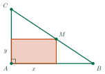
Một thửa đất hình tam giác \(ABC\) vuông tại \(A\), \(AB=12\) m, \(AC=8\) m. Bác nông dân rào một hình chữ nhật có một đỉnh tại \(A\) và đỉnh đối diện \(M\) thuộc \(BC\) (hình vẽ). Diện tích lớn nhất có thể là bao nhiêu (m²)?
Answer: a. With sides \(x\) on \(AB\) and \(y\) on \(AC\): \(\dfrac{x}{12}+\dfrac{y}{8}=1\), so \(S=xy=\dfrac{8}{12}x(12-x)\), \(S'=0\Leftrightarrow x=6\), \(y=4\), \(S_{\max}=24\).
Đáp án a. Gọi các cạnh là \(x\) (trên \(AB\)) và \(y\) (trên \(AC\)): \(\dfrac{x}{12}+\dfrac{y}{8}=1\), nên \(S=xy=\dfrac{8}{12}x(12-x)\), \(S'=0\Leftrightarrow x=6\), \(y=4\), \(S_{\max}=24\).
B. True or FalseB. Đúng hoặc sai
Among rectangles of perimeter 44 m, the one with length twice its width has the largest area.
Trong các hình chữ nhật có chu vi 44 m, hình chữ nhật có chiều dài gấp đôi chiều rộng có diện tích lớn nhất.
The largest area occurs when the two sides are equal.
Diện tích lớn nhất khi hai cạnh bằng nhau.
For \(C(x)=x+\dfrac{16}{x}\) with \(x\gt0\), the smallest value is 4.
Với \(C(x)=x+\dfrac{16}{x}\), \(x\gt0\), giá trị nhỏ nhất là 4.
\(C'=0\) at \(x=4\) and \(C(4)=8\).
\(C'=0\) tại \(x=4\) và \(C(4)=8\).
A lab models a bacteria colony by \(N(t)=t^3-15t^2+63t+50\) (thousand cells), \(t\) in hours. On the interval \([0;\,10]\), the number of bacteria is smallest at \(t=7\).
Một phòng thí nghiệm mô tả đàn vi khuẩn bởi \(N(t)=t^3-15t^2+63t+50\) (nghìn con), \(t\) tính bằng giờ. Trên đoạn \([0;\,10]\), số vi khuẩn nhỏ nhất tại thời điểm \(t=7\).
\(N'(t)=3t^2-30t+63=3(t-3)(t-7)\). Compare the critical points with the ends: \(N(0)=50\), \(N(3)=131\), \(N(7)=99\), \(N(10)=180\). The smallest value is at \(t=0\), so the statement is false.
\(N'(t)=3t^2-30t+63=3(t-3)(t-7)\). So sánh giá trị tại các điểm tới hạn và hai đầu mút: \(N(0)=50\), \(N(3)=131\), \(N(7)=99\), \(N(10)=180\). Giá trị nhỏ nhất đạt tại \(t=0\), nên mệnh đề sai.
C. Short AnswerC. Trả lời ngắn
Two numbers have sum 16. Find the smallest value of the sum of their squares.
Hai số có tổng bằng 16. Tìm giá trị nhỏ nhất của tổng bình phương hai số đó.
Enter a number.
Nhập một số.
The minimum is at \(x=8\): \(2\cdot8^2=128\).
Nhỏ nhất khi hai số bằng nhau (\(8\)): \(2\cdot8^2=128\).
The profit is \(P(x)=-x^2+10x-9\) (million VND). Find the largest profit.
Lợi nhuận là \(P(x)=-x^2+10x-9\) (triệu đồng). Tìm lợi nhuận lớn nhất.
Enter a number.
Nhập một số.
The vertex is at \(x=5\): \(P=16\).
Đỉnh tại \(x=5\): \(P=16\).
A school builds a rectangular garden of \(1125\ \text{m}^2\). One side \(x\) is a brick wall (\(300\,000\) VND/m), the other three sides are wire fence (\(200\,000\) VND/m), as in the figure. Find \(x\) (m) so that the cost is smallest.
Một trường làm vườn hình chữ nhật diện tích \(1125\ \text{m}^2\). Một cạnh dài \(x\) xây tường gạch (\(300\,000\) đồng/m), ba cạnh còn lại rào lưới (\(200\,000\) đồng/m) như hình. Tìm \(x\) (m) để chi phí nhỏ nhất.
Enter a number; use a decimal point if needed.
Nhập một số; dùng dấu phẩy thập phân nếu cần.
With \(y=\dfrac{1125}{x}\): \(C(x)=0.5\left(x+\dfrac{900}{x}\right)\) (million VND), \(C'(x)=0\Leftrightarrow x^2=900\Leftrightarrow x=30\); \(C(30)=30\).
Với \(y=\dfrac{1125}{x}\): \(C(x)=0{,}5\left(x+\dfrac{900}{x}\right)\) (triệu đồng), \(C'(x)=0\Leftrightarrow x^2=900\Leftrightarrow x=30\); \(C(30)=30\).
D. Self-practice: Multiple ChoiceD. Tự luyện: trắc nghiệm
A window has the shape of a rectangle \(ABCD\) inscribed in a semicircle of radius \(R=4\) dm (see the figure; \(A\), \(B\) lie on the diameter). What is the largest possible area of the rectangle (dm²)?
Một ô cửa có dạng hình chữ nhật \(ABCD\) nội tiếp nửa hình tròn bán kính \(R=4\) dm (xem hình; \(A\), \(B\) nằm trên đường kính). Diện tích lớn nhất của hình chữ nhật là bao nhiêu (dm²)?
Answer: b. Let \(OB=x\); then \(BC=\sqrt{16-x^2}\) and \(S=2x\sqrt{16-x^2}\). \(S^2=4x^2(16-x^2)\) is largest when \(x^2=8\), so \(S_{\max}=R^2=16\).
Đáp án b. Đặt \(OB=x\); khi đó \(BC=\sqrt{16-x^2}\) và \(S=2x\sqrt{16-x^2}\). \(S^2=4x^2(16-x^2)\) lớn nhất khi \(x^2=8\), nên \(S_{\max}=R^2=16\).
A closed cylindrical can must hold \(54\pi\ \text{cm}^3\). Which base radius (cm) uses the least metal (smallest total surface area)?
Một lon hình trụ có nắp cần chứa \(54\pi\ \text{cm}^3\). Bán kính đáy bằng bao nhiêu (cm) thì tốn ít vật liệu nhất (diện tích toàn phần nhỏ nhất)?
Answer: b. \(h=\dfrac{54}{r^2}\), \(S=2\pi r^2+\dfrac{108\pi}{r}\), \(S'=4\pi r-\dfrac{108\pi}{r^2}=0\Leftrightarrow r^3=27\Leftrightarrow r=3\).
Đáp án b. \(h=\dfrac{54}{r^2}\), \(S=2\pi r^2+\dfrac{108\pi}{r}\), \(S'=4\pi r-\dfrac{108\pi}{r^2}=0\Leftrightarrow r^3=27\Leftrightarrow r=3\).
A power station \(A\) is on one bank of a straight river \(4\) km wide; a factory \(B\) is on the other bank, \(6\) km from the point \(H\) opposite \(A\) (see the figure). A cable goes underwater from \(A\) to \(M\) on the other bank, then along the bank to \(B\). It costs \(100\) million VND per km underwater and \(60\) million VND per km on land. How far from \(H\) should \(M\) be (km) to make the cost smallest?
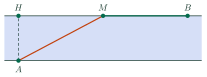
Nhà máy điện \(A\) ở một bờ sông thẳng rộng \(4\) km; xưởng \(B\) ở bờ bên kia, cách điểm \(H\) đối diện \(A\) là \(6\) km (xem hình). Dây điện đi dưới nước từ \(A\) tới \(M\) ở bờ bên kia rồi đi dọc bờ tới \(B\). Chi phí là \(100\) triệu đồng/km dưới nước và \(60\) triệu đồng/km trên bờ. Điểm \(M\) cách \(H\) bao nhiêu km thì chi phí nhỏ nhất?
Answer: c. \(C(x)=100\sqrt{16+x^2}+60(6-x)\); \(C'(x)=0\Leftrightarrow 5 x=3\sqrt{16+x^2}\Leftrightarrow x=3\).
Đáp án c. \(C(x)=100\sqrt{16+x^2}+60(6-x)\); \(C'(x)=0\Leftrightarrow 5 x=3\sqrt{16+x^2}\Leftrightarrow x=3\).
A cinema sells \(130\) tickets a day at \(60\) thousand VND each. Each time the price rises by \(5\) thousand VND, it sells \(5\) fewer tickets. Which price (thousand VND) gives the largest revenue?
Một rạp chiếu phim bán được \(130\) vé mỗi ngày với giá \(60\) nghìn đồng/vé. Cứ tăng giá thêm \(5\) nghìn đồng thì bán ít đi \(5\) vé. Giá vé bao nhiêu (nghìn đồng) thì doanh thu lớn nhất?
Answer: c. After \(x\) rises: \(R(x)=(60+5x)(130-5x)\), \(R'(x)=0\Leftrightarrow x=7\), price \(60+5\cdot7=95\).
Đáp án c. Sau \(x\) lần tăng: \(R(x)=(60+5x)(130-5x)\), \(R'(x)=0\Leftrightarrow x=7\), giá vé \(60+5\cdot7=95\).
After an injection, the concentration of a drug in the blood is \(C(t)=\dfrac{4t}{t^2+1}\) (mg/l), \(t\) in hours. What is the highest concentration (mg/l)?
Sau khi tiêm, nồng độ thuốc trong máu là \(C(t)=\dfrac{4t}{t^2+1}\) (mg/l), \(t\) tính bằng giờ. Nồng độ cao nhất là bao nhiêu (mg/l)?
Answer: c. Highest at \(t=1\): \(C(1)=\dfrac{4}{2}=2\).
Đáp án c. Cao nhất khi \(t=1\): \(C(1)=\dfrac{4}{2}=2\).
At noon ship \(A\) is \(100\) km east of port \(O\) and sails west towards \(O\) at \(6\) km/h; at the same time ship \(B\) leaves \(O\) sailing north at \(8\) km/h. After how many hours are the ships closest?
Lúc 12 giờ, tàu \(A\) cách cảng \(O\) \(100\) km về phía đông và đi về phía tây (về \(O\)) với vận tốc \(6\) km/h; cùng lúc tàu \(B\) rời \(O\) đi về phía bắc với vận tốc \(8\) km/h. Sau bao nhiêu giờ hai tàu gần nhau nhất?
Answer: b. \(AB^2=(100-6t)^2+(8t)^2\); its derivative \(2(100)t-2\cdot100\cdot6=0\Leftrightarrow t=6\).
Đáp án b. \(AB^2=(100-6t)^2+(8t)^2\); đạo hàm \(2(100)t-2\cdot100\cdot6=0\Leftrightarrow t=6\).
A farmer uses \(180\) m of fence to build a rectangular pen divided into \(2\) equal parts by fences parallel to one side (see the figure). What is the largest total area (m²)?
Một bác nông dân dùng \(180\) m lưới rào thành một khu hình chữ nhật, chia thành \(2\) ô bằng nhau bởi các hàng rào song song với một cạnh (xem hình). Tổng diện tích lớn nhất là bao nhiêu (m²)?
Answer: a. \(2x+3y=180\), \(S=xy=\dfrac{x(180-2x)}{3}\), \(S'=0\Leftrightarrow x=45\), \(y=30\), \(S=1350\).
Đáp án a. \(2x+3y=180\), \(S=xy=\dfrac{x(180-2x)}{3}\), \(S'=0\Leftrightarrow x=45\), \(y=30\), \(S=1350\).
The printed part of a poster has area \(48\ \text{dm}^2\). The margins are \(4\) dm at the top and bottom and \(3\) dm at each side (see the figure). What is the smallest possible area of the poster (dm²)?
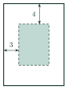
Phần in chữ của một tấm áp phích có diện tích \(48\ \text{dm}^2\). Lề trên và lề dưới đều rộng \(4\) dm, lề hai bên đều rộng \(3\) dm (xem hình). Diện tích nhỏ nhất của tấm áp phích là bao nhiêu (dm²)?
Answer: c. Printed part \(x\times y\), \(xy=48\): \(S=(x+6)(y+8)=96+8x+\dfrac{288}{x}\), smallest at \(x=6\), \(y=8\): \(S=12\cdot16=192\).
Đáp án c. Phần chữ \(x\times y\), \(xy=48\): \(S=(x+6)(y+8)=96+8x+\dfrac{288}{x}\), nhỏ nhất khi \(x=6\), \(y=8\): \(S=12\cdot16=192\).
A. Multiple ChoiceA. Trắc nghiệm nhiều lựa chọn
A rectangle has perimeter 52 m. Its largest area is…
Hình chữ nhật có chu vi 52 m. Diện tích lớn nhất của nó là…
Answer: c. \(x+y=26\), so \(A=x(26-x)\) is largest at \(x=13\).
Đáp án c. \(x+y=26\) nên \(A=x(26-x)\) lớn nhất tại \(x=13\).
There is 120 m of fence and a river forms one side. The largest area is…
Có 120 m hàng rào, bờ sông làm một cạnh. Diện tích lớn nhất là…
Answer: c. \(A=x(120-2x)\), maximum at \(x=30\).
Đáp án c. \(A=x(120-2x)\), lớn nhất tại \(x=30\).
A box is made from a square sheet of side 30 cm by cutting corner squares of side \(x\). The volume is largest when \(x=\)…
Làm hộp từ tấm bìa vuông cạnh 30 cm bằng cách cắt bốn góc cạnh \(x\). Thể tích lớn nhất khi \(x=\)…
Answer: b. \(V'=(30-2x)(30-6x)=0\) gives \(x=5\).
Đáp án b. \(V'=(30-2x)(30-6x)=0\) cho \(x=5\).
A lake gains and loses water; the graph of the rate \(V'(t)\) for \(t\in[0;\,9]\) (hours) is given. Choose the time when the lake holds the most water.
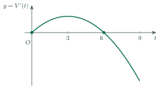
Một hồ nước vừa nhận vừa mất nước; đồ thị tốc độ \(V'(t)\) với \(t\in[0;\,9]\) (giờ) cho như hình. Chọn thời điểm hồ chứa nhiều nước nhất.
Answer: d. \(V'(t)\gt0\) on \((0;\,6)\) and \(V'(t)\lt0\) on \((6;\,9]\): \(V\) increases, then decreases, so it is largest at \(t=6\). (The top of the graph of \(V'\) only shows when water rises fastest.)
Đáp án d. \(V'(t)\gt0\) trên \((0;\,6)\) và \(V'(t)\lt0\) trên \((6;\,9]\): \(V\) tăng rồi giảm nên lớn nhất tại \(t=6\). (Đỉnh đồ thị \(V'\) chỉ là lúc nước dâng nhanh nhất.)
In the first \(7\) seconds a robot covers \(s(t)=-t^3+12t^2+9t\) meters along a line. What is its highest speed (m/s)?
Trong \(7\) giây đầu, một robot đi được \(s(t)=-t^3+12t^2+9t\) mét trên một đường thẳng. Vận tốc lớn nhất của robot (m/s) là bao nhiêu?
Answer: b. \(v(t)=s'(t)=-3t^2+24t+9\), \(v'(t)=-6t+24=0\Leftrightarrow t=4\in[0;\,7]\). \(v(0)=9\), \(v(4)=57\), \(v(7)=30\), so \(v_{\max}=57\).
Đáp án b. \(v(t)=s'(t)=-3t^2+24t+9\), \(v'(t)=-6t+24=0\Leftrightarrow t=4\in[0;\,7]\). \(v(0)=9\), \(v(4)=57\), \(v(7)=30\), nên \(v_{\max}=57\).
In the right triangle \(ABC\) (\(\widehat{A}=90^\circ\), \(AB=20\) m, \(AC=12\) m) a rectangular fish pond is dug: one vertex at \(A\), the opposite vertex \(M\) on \(BC\) (figure). Find the maximum area of the pond (m²).
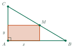
Trong tam giác \(ABC\) vuông tại \(A\) (\(AB=20\) m, \(AC=12\) m) người ta đào một ao cá hình chữ nhật: một đỉnh tại \(A\), đỉnh đối diện \(M\) thuộc \(BC\) (hình vẽ). Tìm diện tích lớn nhất của ao (m²).
Answer: a. With sides \(x\) on \(AB\) and \(y\) on \(AC\): \(\dfrac{x}{20}+\dfrac{y}{12}=1\), so \(S=xy=\dfrac{12}{20}x(20-x)\), \(S'=0\Leftrightarrow x=10\), \(y=6\), \(S_{\max}=60\).
Đáp án a. Gọi các cạnh là \(x\) (trên \(AB\)) và \(y\) (trên \(AC\)): \(\dfrac{x}{20}+\dfrac{y}{12}=1\), nên \(S=xy=\dfrac{12}{20}x(20-x)\), \(S'=0\Leftrightarrow x=10\), \(y=6\), \(S_{\max}=60\).
B. True or FalseB. Đúng hoặc sai
Among rectangles of perimeter 60 m, the square has the largest area.
Trong các hình chữ nhật có chu vi 60 m, hình vuông có diện tích lớn nhất.
The largest area occurs when the two sides are equal.
Diện tích lớn nhất khi hai cạnh bằng nhau.
For \(C(x)=x+\dfrac{25}{x}\) with \(x\gt0\), the smallest value is 5.
Với \(C(x)=x+\dfrac{25}{x}\), \(x\gt0\), giá trị nhỏ nhất là 5.
\(C'=0\) at \(x=5\) and \(C(5)=10\).
\(C'=0\) tại \(x=5\) và \(C(5)=10\).
The bacteria count is \(N(t)=t^3-9t^2+15t+30\) (thousands) for \(t\in[0;\,6]\) hours. Then the number of bacteria is largest at \(t=1\).
Số vi khuẩn là \(N(t)=t^3-9t^2+15t+30\) (nghìn con) với \(t\in[0;\,6]\) giờ. Khi đó số vi khuẩn lớn nhất tại thời điểm \(t=1\).
\(N'(t)=3t^2-18t+15=3(t-1)(t-5)\). Compare the critical points with the ends: \(N(0)=30\), \(N(1)=37\), \(N(5)=5\), \(N(6)=12\). The largest value is at \(t=1\), so the statement is true.
\(N'(t)=3t^2-18t+15=3(t-1)(t-5)\). So sánh giá trị tại các điểm tới hạn và hai đầu mút: \(N(0)=30\), \(N(1)=37\), \(N(5)=5\), \(N(6)=12\). Giá trị lớn nhất đạt tại \(t=1\), nên mệnh đề đúng.
C. Short AnswerC. Trả lời ngắn
Two numbers have sum 22. Find the smallest value of the sum of their squares.
Hai số có tổng bằng 22. Tìm giá trị nhỏ nhất của tổng bình phương hai số đó.
Enter a number.
Nhập một số.
The minimum is at \(x=11\): \(2\cdot11^2=242\).
Nhỏ nhất khi hai số bằng nhau (\(11\)): \(2\cdot11^2=242\).
The profit is \(P(x)=-x^2+14x-12\) (million VND). Find the largest profit.
Lợi nhuận là \(P(x)=-x^2+14x-12\) (triệu đồng). Tìm lợi nhuận lớn nhất.
Enter a number.
Nhập một số.
The vertex is at \(x=7\): \(P=37\).
Đỉnh tại \(x=7\): \(P=37\).
A parking lot shaped like a rectangle has area \(1200\ \text{m}^2\). Its front side is a wall at \(500\,000\) VND per meter and the remaining sides are a fence at \(100\,000\) VND per meter (figure). What is the least possible cost (million VND)?
Một bãi đỗ xe hình chữ nhật có diện tích \(1200\ \text{m}^2\). Cạnh phía trước xây tường giá \(500\,000\) đồng/m, các cạnh còn lại rào lưới giá \(100\,000\) đồng/m (hình vẽ). Chi phí nhỏ nhất là bao nhiêu triệu đồng?
Enter a number; use a decimal point if needed.
Nhập một số; dùng dấu phẩy thập phân nếu cần.
With \(y=\dfrac{1200}{x}\): \(C(x)=0.6\left(x+\dfrac{400}{x}\right)\) (million VND), \(C'(x)=0\Leftrightarrow x^2=400\Leftrightarrow x=20\); \(C(20)=24\).
Với \(y=\dfrac{1200}{x}\): \(C(x)=0{,}6\left(x+\dfrac{400}{x}\right)\) (triệu đồng), \(C'(x)=0\Leftrightarrow x^2=400\Leftrightarrow x=20\); \(C(20)=24\).
D. Self-practice: Multiple ChoiceD. Tự luyện: trắc nghiệm
A window has the shape of a rectangle \(ABCD\) inscribed in a semicircle of radius \(R=6\) dm (see the figure; \(A\), \(B\) lie on the diameter). What is the largest possible area of the rectangle (dm²)?
Một ô cửa có dạng hình chữ nhật \(ABCD\) nội tiếp nửa hình tròn bán kính \(R=6\) dm (xem hình; \(A\), \(B\) nằm trên đường kính). Diện tích lớn nhất của hình chữ nhật là bao nhiêu (dm²)?
Answer: c. Let \(OB=x\); then \(BC=\sqrt{36-x^2}\) and \(S=2x\sqrt{36-x^2}\). \(S^2=4x^2(36-x^2)\) is largest when \(x^2=18\), so \(S_{\max}=R^2=36\).
Đáp án c. Đặt \(OB=x\); khi đó \(BC=\sqrt{36-x^2}\) và \(S=2x\sqrt{36-x^2}\). \(S^2=4x^2(36-x^2)\) lớn nhất khi \(x^2=18\), nên \(S_{\max}=R^2=36\).
A closed cylindrical can must hold \(54\pi\ \text{cm}^3\). What is the smallest possible total surface area (cm²)?
Một lon hình trụ có nắp cần chứa \(54\pi\ \text{cm}^3\). Diện tích toàn phần nhỏ nhất của lon là bao nhiêu (cm²)?
Answer: a. The minimum is at \(r=3\), \(h=6\): \(S=2\pi\cdot9+2\pi\cdot3\cdot6=54\pi\).
Đáp án a. Nhỏ nhất khi \(r=3\), \(h=6\): \(S=2\pi\cdot9+2\pi\cdot3\cdot6=54\pi\).
A power station \(A\) is on one bank of a straight river \(5\) km wide; a factory \(B\) is on the other bank, \(18\) km from the point \(H\) opposite \(A\) (see the figure). A cable goes underwater from \(A\) to \(M\) on the other bank, then along the bank to \(B\). It costs \(130\) million VND per km underwater and \(120\) million VND per km on land. How far from \(H\) should \(M\) be (km) to make the cost smallest?
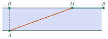
Nhà máy điện \(A\) ở một bờ sông thẳng rộng \(5\) km; xưởng \(B\) ở bờ bên kia, cách điểm \(H\) đối diện \(A\) là \(18\) km (xem hình). Dây điện đi dưới nước từ \(A\) tới \(M\) ở bờ bên kia rồi đi dọc bờ tới \(B\). Chi phí là \(130\) triệu đồng/km dưới nước và \(120\) triệu đồng/km trên bờ. Điểm \(M\) cách \(H\) bao nhiêu km thì chi phí nhỏ nhất?
Answer: a. \(C(x)=130\sqrt{25+x^2}+120(18-x)\); \(C'(x)=0\Leftrightarrow 13 x=12\sqrt{25+x^2}\Leftrightarrow x=12\).
Đáp án a. \(C(x)=130\sqrt{25+x^2}+120(18-x)\); \(C'(x)=0\Leftrightarrow 13 x=12\sqrt{25+x^2}\Leftrightarrow x=12\).
A cinema sells \(240\) tickets a day at \(40\) thousand VND each. Each time the price rises by \(10\) thousand VND, it sells \(20\) fewer tickets. Which price (thousand VND) gives the largest revenue?
Một rạp chiếu phim bán được \(240\) vé mỗi ngày với giá \(40\) nghìn đồng/vé. Cứ tăng giá thêm \(10\) nghìn đồng thì bán ít đi \(20\) vé. Giá vé bao nhiêu (nghìn đồng) thì doanh thu lớn nhất?
Answer: c. After \(x\) rises: \(R(x)=(40+10x)(240-20x)\), \(R'(x)=0\Leftrightarrow x=4\), price \(40+10\cdot4=80\).
Đáp án c. Sau \(x\) lần tăng: \(R(x)=(40+10x)(240-20x)\), \(R'(x)=0\Leftrightarrow x=4\), giá vé \(40+10\cdot4=80\).
After an injection, the concentration of a drug in the blood is \(C(t)=\dfrac{3t}{t^2+1}\) (mg/l), \(t\) in hours. What is the highest concentration (mg/l)?
Sau khi tiêm, nồng độ thuốc trong máu là \(C(t)=\dfrac{3t}{t^2+1}\) (mg/l), \(t\) tính bằng giờ. Nồng độ cao nhất là bao nhiêu (mg/l)?
Answer: d. Highest at \(t=1\): \(C(1)=\dfrac{3}{2}=1.5\).
Đáp án d. Cao nhất khi \(t=1\): \(C(1)=\dfrac{3}{2}=1{,}5\).
Ship \(A\) is \(50\) km east of port \(O\) and sails west towards \(O\) at \(4\) km/h; at the same time ship \(B\) leaves \(O\) sailing north at \(3\) km/h. What is the smallest distance between them (km)?
Tàu \(A\) cách cảng \(O\) \(50\) km về phía đông, đi về phía tây (về \(O\)) với vận tốc \(4\) km/h; cùng lúc tàu \(B\) rời \(O\) đi về phía bắc với vận tốc \(3\) km/h. Khoảng cách nhỏ nhất giữa hai tàu là bao nhiêu km?
Answer: c. Smallest at \(t=8\): \(AB=\sqrt{18^2+24^2}=30\).
Đáp án c. Nhỏ nhất khi \(t=8\): \(AB=\sqrt{18^2+24^2}=30\).
A farmer uses \(80\) m of fence to build a rectangular pen divided into \(3\) equal parts by fences parallel to one side (see the figure). What is the largest total area (m²)?
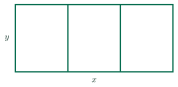
Một bác nông dân dùng \(80\) m lưới rào thành một khu hình chữ nhật, chia thành \(3\) ô bằng nhau bởi các hàng rào song song với một cạnh (xem hình). Tổng diện tích lớn nhất là bao nhiêu (m²)?
Answer: c. \(2x+4y=80\), \(S=xy=\dfrac{x(80-2x)}{4}\), \(S'=0\Leftrightarrow x=20\), \(y=10\), \(S=200\).
Đáp án c. \(2x+4y=80\), \(S=xy=\dfrac{x(80-2x)}{4}\), \(S'=0\Leftrightarrow x=20\), \(y=10\), \(S=200\).
The printed part of a poster has area \(24\ \text{dm}^2\). The margins are \(3\) dm at the top and bottom and \(2\) dm at each side (see the figure). What is the smallest possible area of the poster (dm²)?
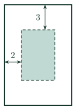
Phần in chữ của một tấm áp phích có diện tích \(24\ \text{dm}^2\). Lề trên và lề dưới đều rộng \(3\) dm, lề hai bên đều rộng \(2\) dm (xem hình). Diện tích nhỏ nhất của tấm áp phích là bao nhiêu (dm²)?
Answer: b. Printed part \(x\times y\), \(xy=24\): \(S=(x+4)(y+6)=48+6x+\dfrac{96}{x}\), smallest at \(x=4\), \(y=6\): \(S=8\cdot12=96\).
Đáp án b. Phần chữ \(x\times y\), \(xy=24\): \(S=(x+4)(y+6)=48+6x+\dfrac{96}{x}\), nhỏ nhất khi \(x=4\), \(y=6\): \(S=8\cdot12=96\).
8Common MistakesLỗi thường gặp
Forgetting the domain. \(x\) must make every length positive.
Quên miền giá trị của biến. \(x\) phải làm mọi độ dài dương.
Not comparing with the ends. On a closed interval, also compute \(f\) at both ends.
Không so sánh với đầu mút. Trên đoạn, cần tính \(f\) tại hai đầu mút.
Using a root outside the domain. For the box, \(x=\dfrac a2\) gives volume 0.
Dùng nghiệm ngoài miền giá trị. Với hộp, \(x=\dfrac a2\) cho thể tích bằng 0.
Answer without units. Write m², cm³, million VND.
Đáp số thiếu đơn vị. Cần viết m², cm³, triệu đồng.
9Lesson SummaryTổng kết
Choose \(x\), write \(f(x)\) from the constraint, solve \(f'(x)=0\), compare values.
Chọn \(x\), lập \(f(x)\) nhờ ràng buộc, giải \(f'(x)=0\), so sánh các giá trị.
Fixed perimeter: the square has the largest area.
Chu vi cho trước: hình vuông có diện tích lớn nhất.
Open box: \(x=\dfrac a6\), \(V_{\max}=\dfrac{2a^3}{27}\).
Hộp không nắp: \(x=\dfrac a6\), \(V_{\max}=\dfrac{2a^3}{27}\).
Key English words: optimization, objective function, constraint, domain.
Từ cần nhớ (chạm vào để xem tiếng Anh): tối ưu hóa; biểu thức mục tiêu; ràng buộc; tập xác định.